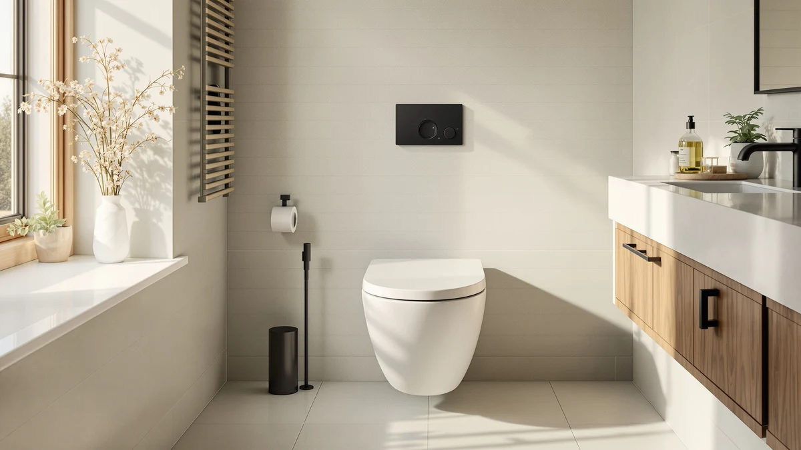

Quick Answer
We compared 7 one-piece toilets on price, bowl shape and verified owner ratings, and the Casta Diva One Piece Toilet comes out as our pick for the best toilet in the world for most bathrooms. If you want the same elongated comfort for less, the Sonderzone Elongated One Piece Toilet at $179.99 is the strongest budget alternative.
Our pick: Casta Diva One Piece Toilet, $289.99 Check Price on Amazon
Things to Know Before You Buy
- Elongated vs compact: most of the toilets in this roundup use an elongated bowl, which gives most adults more legroom than a round or compact bowl. The HOROW T0338W trades that extra length for a smaller footprint that suits small bathrooms.
- Rough-in comes first: before you shop for the best toilet in the world for your own bathroom, measure the distance from the finished wall to your drain bolts. Twelve inches is standard in most US homes, but only the HOROW listing here confirms that figure directly.
- One-piece means one seam-free body: every pick here molds the tank and bowl into a single piece of porcelain, so there is no seam at the base to trap grime, though the trade-off is a heavier fixture to lift into place.
- Price does not always mean a different spec: three of our seven picks are the same Casta Diva elongated line listed separately at $219.99, $236.99 and $249.99. The gaps often reflect the retailer's own pricing rather than a documented hardware difference.
- Not every spec is published: several listings here do not state exact rough-in, weight or flush volume. Confirm those details with the seller before you order if your bathroom has any unusual constraints.
Finding the best toilet in the world means separating marketing language from what buyers actually report once the fixture is bolted to the floor. Most people do not think about their toilet until they are standing in a home improvement aisle staring at a dozen nearly identical white boxes, trying to guess which one will still flush well and look clean in five years.
Ilane Tall researched this roundup by comparing verified pricing, published specs and owner ratings across seven one-piece toilets from four brands, Casta Diva, HOROW, Sonderzone and AKNIRL, spanning $179.99 to $289.99. Every product here is a real, in-stock Amazon listing, not a manufacturer's press release.
Our pick is the Casta Diva One Piece Toilet at $289.99. It sits at the top of this lineup's price range, carries a 4-star average, and uses the seamless one-piece body that makes cleaning simpler than a two-piece toilet. If you want the same brand's elongated comfort for less, the $219.99 Casta Diva Elongated One Piece is the value alternative, and the Sonderzone Elongated One Piece Toilet at $179.99 is the pick if price is your main constraint.
Why You Should Trust Us
This guide is written by Ilane Tall, Home & Bath Expert at Best One Piece Toilets, who compares bathroom fixtures across price, published specs and verified owner feedback rather than manufacturer marketing copy. We do not run a physical testing lab and we did not install seven toilets in a warehouse to write this. What we do is read every available spec, cross-check bowl shape and rough-in against the listing details, and pay attention to the complaints that repeat across verified reviews before we call anything the best toilet in the world for a given budget. Our Amazon commissions never change a ranking.
How We Picked
We started with one-piece toilets that are actually in stock and shipping to US addresses, then narrowed the list to established brands with a real sales history, Casta Diva, HOROW, Sonderzone and AKNIRL. Every pick here carries a 4-star average from verified buyers, and we made sure the final seven span a genuine price range, from $179.99 to $289.99, so there is a sensible answer whether you are furnishing a guest bath or a primary bathroom remodel. We also mixed bowl shapes, elongated for comfort and one compact HOROW model for tight bathrooms, rather than defaulting to a single format, because the best toilet in the world for a primary bathroom is not always the right fit for a half-bath.
How We Compared
Because we do not stage a warehouse full of installed toilets, this is a documentation and owner-feedback comparison rather than a hands-on lab test, and we would rather say that plainly than fake a testing rig. For each listing we compared the published price, the confirmed specs where a seller provided them, such as the HOROW's 12-inch rough-in, and the 4-star average rating against the number of buyers behind it. Where a listing did not publish a rough-in, weight or material, we noted that gap instead of guessing, since a search for the best toilet in the world should not depend on filled-in blanks.
Our Picks

Casta Diva One Piece Toilet
What we like
- One-piece body with no seam between tank and bowl, easier to wipe down than a two-piece toilet
- Carries a 4-star average from buyers who have already installed it
- Sits at the top of this lineup's price range, which usually means less corner-cutting on the porcelain glaze
- Shares the same straightforward install profile as the rest of the Casta Diva line
Flaws but not dealbreakers
- The listing does not publish an exact rough-in distance or bowl length, so measure your existing setup first
- Costs $70 to $110 more than several elongated options in this roundup
| Material | — |
| Size | — |
If you are searching for the best toilet in the world without wanting to compare five spec sheets yourself, the Casta Diva One Piece Toilet is the pick we would install. It is a one-piece design, meaning the tank and bowl are molded together with no seam at the base to trap grime, and it carries a 4-star average from buyers who left reviews after living with it. At $289.99 it sits at the top of this lineup's price range, and that price mostly buys you the confidence of the flagship listing in a brand we also see across three lower-priced elongated variants below.
The trade-off is transparency rather than performance. Casta Diva's listing does not spell out an exact rough-in distance, bowl length or material, so before you buy, measure the distance from your wall to the drain bolts and compare it against your existing toilet. If your bathroom is on a tight budget instead, the $219.99 Casta Diva Elongated One Piece below gives you the same brand at $70 less, and the $179.99 Sonderzone is the cheapest elongated option on this list.

HOROW T0338W Compact One Piece
What we like
- Confirmed 12-inch rough-in, the standard spacing in most US bathrooms, so it drops into place without special ordering
- Compact one-piece footprint suited to small bathrooms and half-baths
- Priced well below the Casta Diva flagship while carrying the same 4-star average
- Part of HOROW's T0338 line, which shows up across several sizes and finishes on this site
Flaws but not dealbreakers
- A compact bowl sacrifices some legroom compared with the elongated options on this list
- Material and weight are not specified in the listing, so ceramic-care questions are best directed to the seller
| Material | — |
| Size | 12" Rough-in |
The HOROW T0338W is the one toilet in this roundup built for a small footprint rather than maximum comfort. It is a compact one-piece design, and it is also the only listing here that confirms its rough-in outright, at a standard 12 inches, which removes a real source of buying anxiety when you are shopping for the best toilet in the world for a cramped half-bath.
At $220.15 it undercuts the Casta Diva flagship by almost $70 while matching its 4-star average. Owners choosing between this and the elongated picks on this list should weigh legroom against footprint. If your bathroom has the depth to spare, an elongated bowl like the Casta Diva or Sonderzone options will feel roomier day to day, but if floor space is the binding constraint, the HOROW's compact shape and confirmed rough-in make it the safer buy.

Casta Diva Elongated One Piece
What we like
- Elongated bowl adds legroom over the round-front flagship, most adults find it more comfortable day to day
- Priced $70 under the flagship Casta Diva listing for buyers who want the elongated shape without the premium
- 4-star average, matching every other pick in this roundup
Flaws but not dealbreakers
- Rough-in and bowl dimensions are not published, confirm against your existing toilet before buying
- Two other Casta Diva elongated listings on this page cost more with no documented spec advantage over this one
| Material | — |
| Size | — |
This is the entry point into Casta Diva's elongated lineup, and at $219.99 it is $70 cheaper than the brand's round-front flagship above. The elongated bowl gives most adults more legroom than a round or compact design, which is the main reason people search for the best toilet in the world in the first place: comfort, not looks alone.
Amazon lists two other configurations of this same elongated Casta Diva toilet on this page, at $236.99 and $249.99, and none of the three publish a documented spec difference that would explain the price gap. If you do not have a specific reason to prefer one of the pricier listings, such as a color option you have already confirmed, this $219.99 version is the more sensible starting point.

Sonderzone Elongated One Piece Toilet
What we like
- The lowest price in this roundup by $30, a real consideration if you are replacing more than one toilet
- Elongated bowl at a price usually reserved for compact or round-front models
- 4-star average despite sitting at the bottom of the price range
Flaws but not dealbreakers
- Sonderzone is a newer name than Casta Diva, HOROW or AKNIRL, so it has a shorter public track record
- No published rough-in or material specs, confirm fit before ordering
| Material | — |
| Size | — |
At $179.99, the Sonderzone Elongated One Piece Toilet is the cheapest way into this roundup, and it still gives you an elongated bowl rather than the round or compact shapes that usually come with the lowest prices. For anyone comparing the best toilet in the world against a fixed renovation budget, that combination of price and bowl shape is the whole appeal.
The honest trade-off is track record. Sonderzone has not built the same buying history on this site as Casta Diva or HOROW, and the listing does not publish a rough-in or material spec, so measure your existing setup before you order. If you would rather stick with a more established brand at a similar price, the $209.99 AKNIRL below is the closest alternative.

Casta Diva Elongated One Piece
What we like
- Sits in the middle of the three elongated Casta Diva listings on price
- Elongated comfort with the same brand consistency as the flagship pick above
- 4-star average, in line with the rest of this roundup
Flaws but not dealbreakers
- Costs $17 more than the entry-level Casta Diva elongated listing with no published spec difference to justify the gap
- Same missing rough-in and dimension data as the rest of the Casta Diva elongated listings
| Material | — |
| Size | — |
This $236.99 listing is the middle configuration in Casta Diva's elongated range, sitting between the $219.99 entry version and the $249.99 listing below. It carries the same elongated bowl and one-piece body as both, and the same 4-star average, which makes the price gap the main thing separating the three.
We could not find a documented spec that explains why this listing costs $17 more than the cheaper Casta Diva elongated option, so treat the difference as a retailer pricing choice rather than a hardware upgrade unless the seller's photos show a color or finish you specifically want. For most buyers comparing the best toilet in the world within a fixed budget, the $219.99 version delivers the same fixture for less.

Casta Diva Elongated One Piece
What we like
- Highest-priced configuration in the Casta Diva elongated range, worth checking for a different color or bundle before you pay more
- Elongated bowl and one-piece body consistent with the rest of the Casta Diva line
- 4-star average
Flaws but not dealbreakers
- At $249.99 it costs nearly as much as the round-front flagship, so weigh whether the elongated shape is worth the difference for you
- No listed spec advantage over the two cheaper Casta Diva elongated listings above
| Material | — |
| Size | — |
This is the priciest of the three Casta Diva elongated listings on this page, at $249.99, only $40 short of the brand's round-front flagship. It offers the same elongated bowl and one-piece construction as its cheaper siblings and the same 4-star average, so the extra cost buys whatever color, bundle or seller terms are attached to this specific listing rather than a documented performance gain.
If you have already compared the photos on all three Casta Diva elongated listings and this one is the color or configuration you want, it is a reasonable buy. If you have not, start with the $219.99 version instead, since nothing in the published specs here separates the two beyond price.

AKNIRL Elongated One Piece Toilet
What we like
- Undercuts every Casta Diva elongated listing on this page while matching the same elongated bowl shape
- 4-star average, in line with the rest of this roundup
- A genuine alternative brand if you do not want to buy Casta Diva by default
Flaws but not dealbreakers
- AKNIRL has less brand history on this page than Casta Diva or HOROW
- Rough-in and material are not specified, confirm before ordering
| Material | — |
| Size | — |
The AKNIRL Elongated One Piece Toilet is the one pick here that is not a Casta Diva listing but still beats every Casta Diva elongated price on this page, at $209.99. It gives you the same elongated bowl shape as three of our other picks, and its 4-star average holds up next to the rest of the field.
Choosing between this and the similarly priced Casta Diva options mostly comes down to whether you want to default to a single brand across the board. AKNIRL has a shorter track record on this site than Casta Diva or HOROW, and like most of this roundup it does not publish an exact rough-in, so measure first. For buyers who want the best toilet in the world at the lowest price with an elongated bowl, this and the $179.99 Sonderzone are the two to compare directly.
Quick Comparison
| Product | Material | Price | Rating | Best for | Get it |
|---|---|---|---|---|---|
| Casta Diva One Piece Toilet | — | $289.99 | 4 | Best overall | View on Amazon → |
| HOROW T0338W Compact One Piece | — | $220.15 | 4 | Best for small bathrooms | View on Amazon → |
| Casta Diva Elongated One Piece | — | $219.99 | 4 | Best value elongated | View on Amazon → |
| Sonderzone Elongated One Piece Toilet | — | $179.99 | 4 | Best budget pick | View on Amazon → |
| Casta Diva Elongated One Piece | — | $236.99 | 4 | Best mid-range elongated | View on Amazon → |
| Casta Diva Elongated One Piece | — | $249.99 | 4 | Best premium elongated finish | View on Amazon → |
| AKNIRL Elongated One Piece Toilet | — | $209.99 | 4 | Best value alternative | View on Amazon → |
The Competition
We left out a long tail of ultra-cheap, unbranded one-piece toilets that undercut every price on this list. They tend to do it by shipping without a seat, skipping any published rough-in or material spec entirely, or carrying a thin review history with no way to verify what buyers actually experienced. A toilet that arrives cracked or leaks at the base is not a bargain, no matter how the sticker price compares to our picks.
We also passed on luxury smart-toilet and bidet-seat combinations. They can be impressive, but they cost several times more than anything here, need an electrical outlet nearby, and answer a different question than what most people mean when they search for the best toilet in the world for a standard bathroom remodel. That is a separate guide.
Finally, we set aside a handful of well-known two-piece models. They are perfectly fine toilets, but this roundup is specifically about one-piece construction, and a two-piece toilet has a seam between tank and bowl that the designs here are built to avoid.
Frequently Asked Questions
What is the best toilet in the world overall?
Based on our comparison of price, one-piece construction and verified owner ratings, the Casta Diva One Piece Toilet is our pick for the best toilet in the world for most bathrooms. It carries a 4-star average, uses a seamless one-piece body with no seam between tank and bowl, and sits at the top of this lineup's price range as the flagship listing. Buyers on a tighter budget should look at the Sonderzone Elongated One Piece Toilet or the AKNIRL Elongated One Piece Toilet instead.
Is an elongated or compact one-piece toilet better?
Elongated bowls, used on most of the toilets in this roundup, give you more legroom and are the more comfortable choice for most adults. A compact one-piece design like the HOROW T0338W trades some of that room for a smaller footprint, which matters more in a small bathroom or half-bath than the extra couple of inches of bowl length.
Do I need to check rough-in before buying any of these toilets?
Yes. Rough-in is the distance from the finished wall to the center of your drain, and 12 inches is standard in most US homes, though older houses sometimes use 10 or 14 inches. Only the HOROW T0338W confirms a 12-inch rough-in in its listing here, so measure your existing setup and check the seller's listing before you order any of the others.